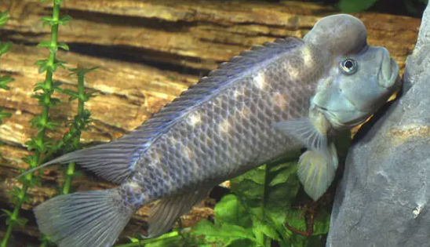

Systématique
- Ordre : Cichliformes
- Famille : Cichlidae
- Genre : Steatocranus
- Espèce : S. casuarius
- Auteur : Poll, 1939

Steatocranus casuarius, souvent surnommé "Cichlidé Lion" ou "Bossu du Congo", est un poisson rhéophile (aimant le courant) singulier. Sa morphologie est une adaptation directe aux eaux rapides : sa vessie natatoire est atrophiée, ce qui lui permet de rester plaqué au fond sans effort. Le trait le plus frappant est la bosse adipeuse frontale, très développée chez les vieux mâles, rappelant le casque d'un casoar.
Le mâle atteint environ 10 à 12 cm, tandis que la femelle reste plus petite, autour de 8 cm. La coloration générale est sobre, allant du gris anthracite au brun olive, avec parfois des reflets bleutés sur les nageoires. Le corps est trapu et les nageoires pectorales sont puissantes pour s'ancrer au substrat.
C'est un poisson territorial et benthique qui se déplace par petits bonds saccadés au-dessus du substrat. Steatocranus casuarius vit en couple monogame très soudé ; une fois formé, le couple reste généralement uni pour la vie. Bien que territorial, il ignore les poissons de pleine eau, mais peut se montrer très agressif envers d'autres cichlidés de fond ou ses propres congénères.
En aquarium, il nécessite un décor riche en anfractuosités, grottes et pierres plates. Une oxygénation importante et un brassage de l'eau soutenu sont indispensables pour reproduire son habitat naturel. C'est un creuseur qui n'hésitera pas à réaménager le sable sous les roches pour créer son logis.
Mode : Ovipare, pondeur sur substrat caché (cavitole).
Le couple choisit une cavité étroite, souvent creusée sous une pierre. La femelle y dépose entre 20 et 60 œufs de grande taille, qu'elle ventile avec soin. Le mâle assure la défense du périmètre extérieur. L'éclosion survient après environ 4 à 5 jours.
Les alevins atteignent la nage libre après environ 10 à 12 jours. Les parents sont des protecteurs exemplaires et continuent de surveiller la progéniture pendant plusieurs semaines. Les jeunes sont assez grands dès la naissance et acceptent immédiatement des nauplies d'artémias ou de la nourriture fine broyée.
Dimorphisme sexuel : Le mâle est plus grand que la femelle. La bosse frontale (gibeosité) est beaucoup plus volumineuse et prononcée chez le mâle, bien que les femelles âgées puissent en développer une petite. Les nageoires dorsale et anale sont également plus effilées chez le mâle.
Espérance de vie : 8 à 10 ans en aquarium.
Originaire du bassin du fleuve Congo et de ses affluents, notamment dans les zones de rapides et de chutes d'eau (Pool Malebo). Il fréquente les eaux turbulentes où le substrat est composé de rochers et de gros galets.
L'eau y est très oxygénée, neutre à légèrement acide, et généralement douce. La végétation aquatique y est quasi inexistante en raison de la force du courant.
Répartition

Origine naturelle :
- Afrique Centrale : Bas-Congo, Pool Malebo (République Démocratique du Congo et Congo).
- Localité type : Kinshasa, Stanley Pool (Pool Malebo).
Statut UICN : Préoccupation mineure (LC). L'espèce est commune dans son aire de répartition et très appréciée en aquariophilie pour son comportement original.
Paramètres de maintenance
Température : 24 à 28 °C.
pH : 6,0 à 7,5.
GH : 5 à 15 °dGH.
Courant : Fort à très fort (oxygénation maximale indispensable).
Volume conseillé : Minimum 120-150 L pour un couple formé.
Régime alimentaire
Régime : Omnivore à tendance carnivore.
Dans la nature, il consomme des invertébrés aquatiques, des larves d'insectes et de petits crustacés trouvés entre les pierres.
En aquarium, il accepte les granulés, paillettes, ainsi que les nourritures surgelées (artémias, daphnies, mysis). Un apport végétal occasionnel est bénéfique.